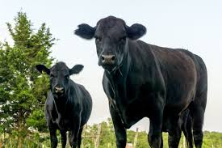

It is critical that with each new generation of Angus cattle, we improve the traits that really matter to cattlemen: maternal, reproduction, growth, carcass, efficiency, structure and more. To do so, it’s important to prioritize data collection with leading research and then develop useful and functional tools for members and their customers.
Consumer demand for the Certified Angus Beef® brand is incredibly high, but we don’t take that for granted. With over 15,000 licensed food service and retail partners, we are committed to delivering consistent quality that never disappoints while assuring consumers that the farmers and ranchers raising beef are incredible stewards of the animals and land in their care.
Angus, breed of black, polled beef cattle, for many years known as Aberdeen Angus, originating in northeastern Scotland. Its ancestry is obscure, though the breed appears closely related to the curly-coated Galloway, sometimes called the oldest breed in Britain.
This breed was introduced into the United States in 1873, and after that date its influence spread widely there and in other countries.
© 2024 Black Angus of America